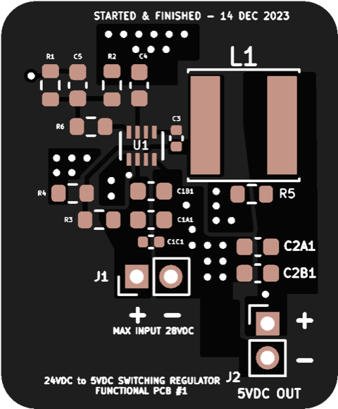
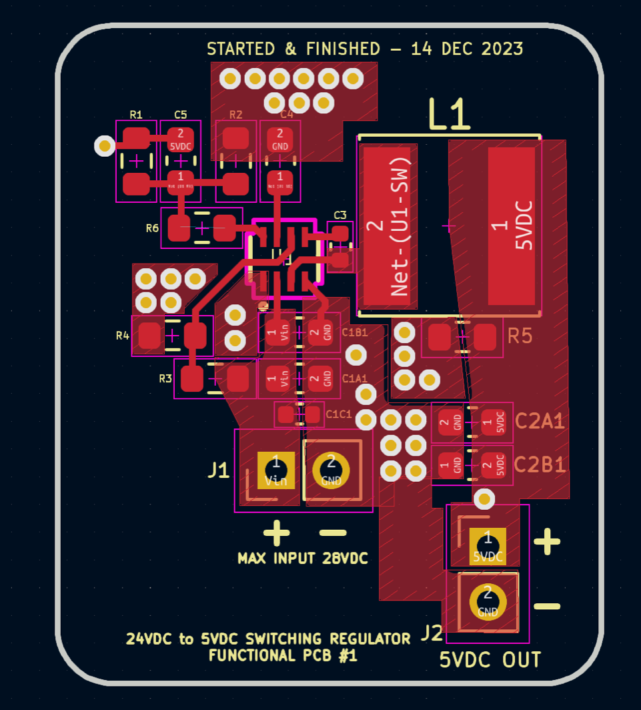
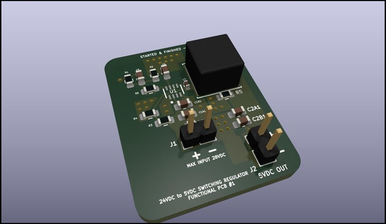

Switching Regulator - Juicing up my pie
So this is a board I just remembered I designed in 2023. It was when I first began getting into electronics, and after spending the day talking about it in relative depth with somebody (and building circuits from some previous projects) I got deeply inspired to begin trying it out - thank you J!
I spent every waking hour, neglecting anything that was not related to designing the circuit, designing this thing to perfection and trying to learn as much as possible - as any reasonable person would do.
I got to the state you'll see in the pictures within 24 hours of beginning with the design to sending it to be manufactured. I don't remember any details other than the obvious: 24VDC input to 5VDC output. Actually, I'm pretty sure it was to power a raspberry pi from a larger power supply. The raspberry pi was controlling the machine, which the power supply was powering.


